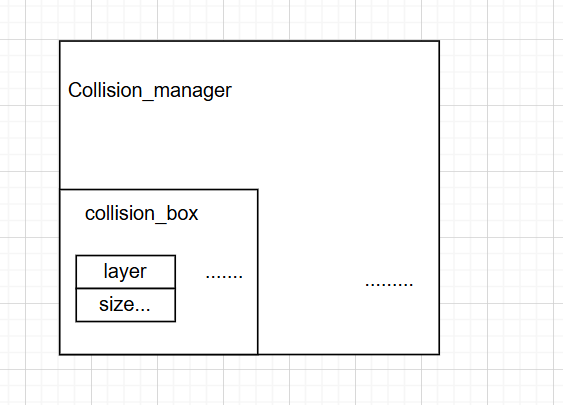

空洞武士笔记5
碰撞管理器的简单设计
面对物理世界的所有碰撞我们都整合在一起管理所有物体的碰撞箱，方便我们统一的进行处理。
就是为了方便这些的统一管理所有碰撞箱子的碰撞发生。
1.层级
这个我们在前面也大体的讲过了用位运算实现层级，最后作为成员组合在碰撞箱子中作为成员变量实现，所以不再提了。
2.碰撞箱子的设计
rivate:
Vector2 size;
Vector2 position;
bool enabled = true;
std::function<void()> on_collide;
CollisionLayer layer_src = CollisionLayer::None;
CollisionLayer layer_dst = CollisionLayer::None;
可以看到这些成员变量
- 因为暂且都用矩形的设计，所以我们用俩个变量代替。size尺寸，和position矩形中心位置。
- enable表明当前的碰撞箱子是否启用。
- 然后就是碰撞发生的回调函数。
- 然后就是俩个层级，自身所处的层级，和目标碰撞层级。
public:
void set_enabled(bool flag)
{
enabled = flag;
}
void set_layer_src(CollisionLayer layer)
{
layer_src = layer;
}
void set_layer_dst(CollisionLayer layer)
{
layer_dst = layer;
}
void set_on_collide(std::function<void()> on_collide)
{
this->on_collide = on_collide;
}
void set_size(const Vector2& size)
{
this->size = size;
}
const Vector2& get_size()const
{
return size;
}
void set_position(const Vector2& position)
{
this->position = position;
}
对成员对象暴露的接口就是一些基本碰撞箱子的属性设置，例如位置，碰撞回调函数，是否启用之类的
friend class CollisionManager;
private:
CollisionBox() = default;
~CollisionBox() = default;
因为我们使用工厂模式，创造和销毁的细节全部存放在碰撞管理器，所以友元声明表明管理器可以接触到构造函数创建碰撞箱子，而玩家需要调用碰撞管理器的函数来创建。
3.碰撞管理器的实现
class CollisionManager
{
public:
static CollisionManager* instance();
CollisionBox* create_collision_box();
void destroy_collision_box(CollisionBox* collision_box);
void process_collide();
void on_debug_render();
private:
static CollisionManager* manager;
std::vector<CollisionBox*> collision_box_list;
private:
CollisionManager();
~CollisionManager();
private:
};
当前的设计也非常简单，单例模式管理器。
- 创建碰撞箱
- 销毁碰撞箱子
- 处理碰撞逻辑
- 碰撞箱子绘制
- 碰撞箱子使用列表存放
就这样，就实现了简单的碰撞箱管理器。
4.可实现的优化
1.四叉树的空间管理优化
前面简单介绍了一下四叉树的实现，其实就是重新创建一个类代替上面的vector取管理碰撞箱子。
三维的我们有八叉树的空间管理方法等等。
2.碰撞箱子形状的优化
我们显然让玩家选择一些基本的碰撞箱子类型。
我们可以设计一个碰撞箱子的基类，然后去拓展一些类。
class Collider {
public:
virtual ~Collider() = default;
// 碰撞检测接口，与其他 Collider 进行碰撞检测
virtual bool CheckCollision(const Collider& other) const = 0;
// 获取碰撞体的包围盒 (Bounding Box)
virtual Rect GetBoundingBox() const = 0;
// 获取碰撞体的位置
virtual Vector2D GetPosition() const = 0;
// 更新碰撞体的位置
virtual void SetPosition(const Vector2D& newPosition) = 0;
// 碰撞体形状可以添加其他通用功能...
};
然后我们可以依照这个逻辑衍生出不同的形状碰撞箱的类管理。